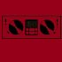
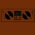
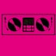
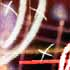

creative stuff
Herein dwells examples of the works of you talented
noise
and THE
PROGRAM
bods, with links to artist profiles and more info about the artists themselves. Onya punters.
Displaying page 1 of 11, containing 1-15 of 152 found items.
Pic //
Name //
In Brief //
Star 69 (Folk Guitar Mix)
Produced by the Super Hyper Turbo Rainbow guitar duo.
Fatboy Slim - Star 69 (Seven Remix)
Slower take on fatboy's track.
Billy T Vs the Fatboy (of the Slim variety)
Slightly slower than the original but with some special surprises just for you.
Fatboy Slim - Star 69 (Steve Liew's Percussive Remix)
A banging/minimal techno remix with deep grooving percussion, adrenaline-charged buildups and powerful kicks.

Eratic-Grat(fatboy slim remix)
Hardass drum&bass remix of star 69
Fatboy Slim - Star 69 (dcoda Remix)
This is a remix of the new track from Fatboy Slim.

The Phat Controller - Star 69 (Star 2001 Remix)
My own taste of Star .
FatBoy Slim - Star 69 (Shane Allen Remix)
My own original remix of FatBoy Slim's track "Star 69".
Star 69 - the starsign mix
For this remix, I took inspiration from some great breakbeat (and dance in general) producers, such as Leftfield, Hybrid and BT.

Star 47
This is a remix of Star 69 by akay47 Break Beat style!
Luke Sparke's Star 69 Remix
Punked up remix of 'Star 69'.
Star69 (Funk Strutt Remix)
This is Matt Warner's Fatboy remix
star 69 remix (clean for the kiddies)
Music is very important to me even though I don't have much time to play with it.
Star69 (Parrot Fashion - They Must Be Stopped)
This was created by two dudes with no musical ability...

star69_dj_nova_assault.mp3
This is Ben (DJ Nova Assault) Teicher's Fatboy Slim remix
1
2
3
4
5
6
7
8
9
10
11
Next
status //
Guest. You may
Register
or
Log In
.
Australian Central Standard Time (GMT +09:30) //
10:57 PM, Sat, 5 Mar, 2005.